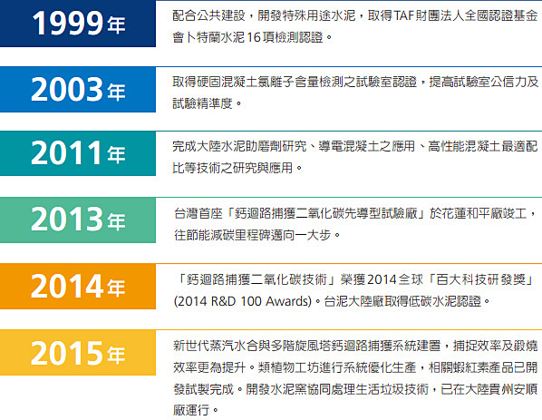

研發創新
研發創新成效
台泥成立全台唯一的水泥及混凝土專業研究室，目前範疇集中在水泥、混凝土及資源再利用等三大領域之開發與推展，應用既有之各項產品開發技術，結合通路及外部資源，以及集團內部之多元人才養成計畫，確保水泥及混凝土品質穩定度能持續優於同業。
此外，也執行各項新技術或製程的開發及導入評估，持續投入在水泥、發電、環境保護及資源化再利用，與捕獲二氧化碳進行再利用之生物技術加值化計畫。
目前已開發成功之技術或產品包括：
- 量產Ⅱ型高性能水泥及Ⅱ／Ⅴ型高強水泥
- 量產IV型水泥，品質符合CNS規範及特殊工程要求泥
- 開發10000psi高性能混凝土之量產
- 開發自充填高抗滲性能混凝土之量產力
- 開發高抗滲性能混凝土之量產力
- 開發氟化鈣污泥之檢測與再利用技術
- 開發水泥微量元素檢測技術
- 油泥灰渣應用之技術
- 降低水泥旋窯預設機結皮之處理技術
- 捕獲及再利用CO2系統之失活吸附劑再利用及封存CO2的方法
- 迴流懸浮式鍛燒爐系統及其使用方法
- 循環塔二氧化碳捕獲系統、碳酸化爐、鍛燒爐及其使用方法
- 二氧化碳捕獲裝置與方法
- 粉體輸送裝置
- 鈣迴路捕獲技術驗證與放大技術研發
- 以煙道氣或結合鈣廻路捕獲二氧化碳技術進行微藻養殖技術開發研究（CCSU）
- 戶外微藻固碳系統及高單價微藻培養研究
